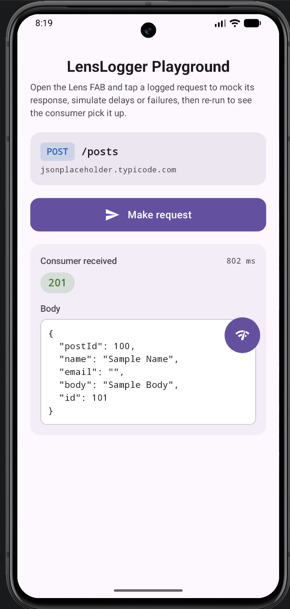

01
Find a request
Open the Lens FAB and choose Network. Search by endpoint, then tap a request to inspect its details.
A successful request shows its status, endpoint, transfer sizes, and elapsed time.
VISUAL GUIDE / NETWORK MOCKS
Use LensLogger to turn a captured request into a repeatable response, slow a call down, or make it fail on purpose. Then replay it and see what your app does.
Explore the workflow
A mock is a rule that matches a request and supplies a response locally, so you can test consumer behavior without relying on the live service.
01 / THE WORKFLOW
Start with a real request in the Network tab. LensLogger carries its URL, method, response body, status, and headers into a new rule so you can adjust only what you need.
Open the Lens FAB and choose Network. Search by endpoint, then tap a request to inspect its details.
A successful request shows its status, endpoint, transfer sizes, and elapsed time.
Switch to Response to check the status, headers, and body before using it as a starting point.
Tap Mock this. Edit the JSON body or response headers, then create the rule.
You can also add a rule from the Mocks tab with the plus button.
Keep the rule enabled, then make the same request again. The app receives your configured status, headers, and body.
Matches use the full URL exactly. HTTP method comparison ignores case.
02 / MOCK RESULTS
A good mock result is visible both where you configure it and where your app consumes it. These examples show success, failure, and request history.
Set the response body and status code your screen expects. Replay the call and verify the consumer renders the new data.
Enable Simulate network failure to throw a synthetic I/O failure. Use it to check retry, empty-state, and error messaging.
RULE CONTROLS
Rules can be enabled or disabled from the Mocks list, edited, or deleted. Add a response delay in milliseconds to exercise loading states.
VISIBLE IN HISTORY
Mocked network entries carry a MOCK badge. Compare them with earlier live calls to see how the consumer result changed.
REQUEST HISTORY
Network history can contain repeated mocked calls, live calls, and failures. Use the endpoint search to narrow the list and open any entry for details.
MATCHING RULES
LensLogger selects the first enabled rule whose full request URL matches exactly and whose HTTP method matches without regard to case. Turn off a rule to let the request use its normal path again.
enabled
+ exact URL
+ same HTTP method→ mock responseREADY TO TRY IT?
Install LensLogger, capture a request, and create a rule for the behavior you want to see.
Read installation guide